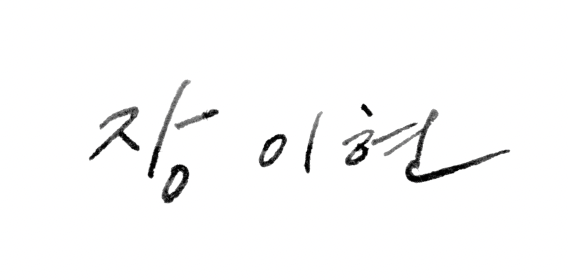

장이현
최근 수정 시각 :
분류: BL캐릭터/광공
|
차성금융지주회사 임원
엔터테인먼트 CYLON 대표이사 ㅁㅁ 미술과 운영위원장 장이현
張理弦 | Zhang Yi-Hyeon
| |
|---|---|
| 출생 | 1991년 8월 30일 |
| 거주지 | 서울특별시 성동구 성수 |
| 국적 | 대한민국 |
| 현직 |
차성금융지주회사 임원 엔터테인먼트 CYLON 대표이사 ㅁㅁ미술관 운영위원장 |
| 학력 |
ㅁㅁ 초등학교 (졸업) 창현중학교 (졸업) 검성고학교 (졸업) 서울대학교 (경영학/학사) 북경대학원 (금융학/석사) |
| 가족관계 |
아버지 장재명, 어머니 쉬자오[1] 형 장준석, 장도겸 |
| 신체 | 192cm | α | O형 |
| 서명 |  |
|
정보 더 보기 [ 펼치기 · 접기 ] |
|
1. 개요 [편집]
2. 생애 [편집]
3. 경력 [편집]
4. 가족관계 [편집]
5. 사건사고 [편집]
6. 여담 [편집]
- [1] 장이현의 어머니이다.